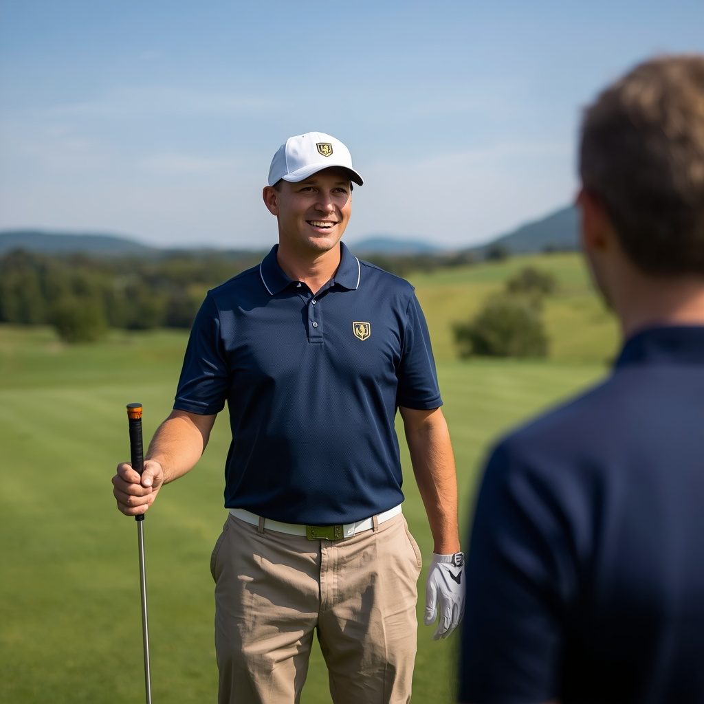
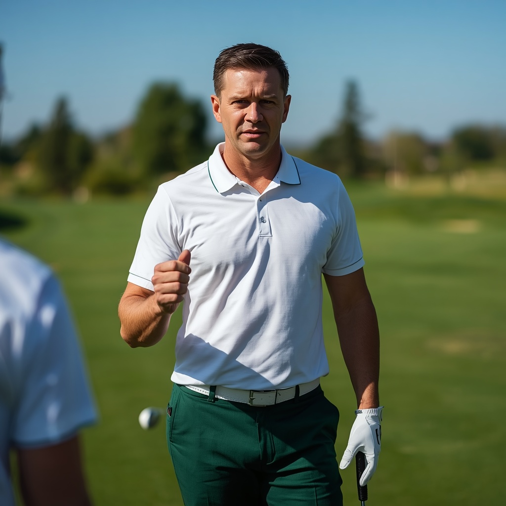
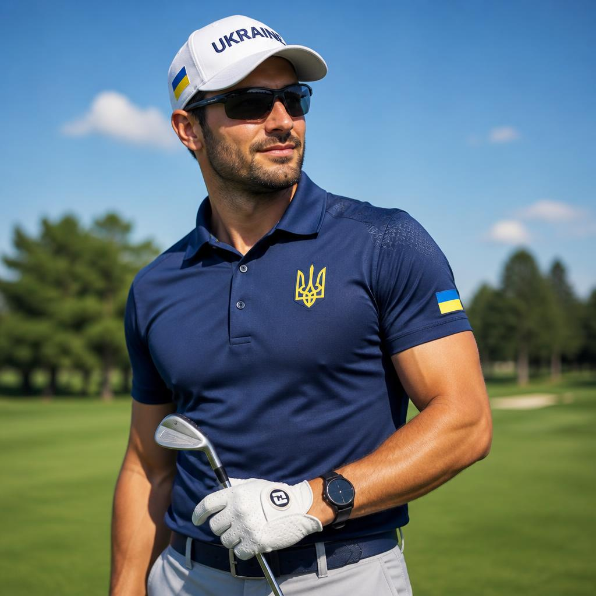
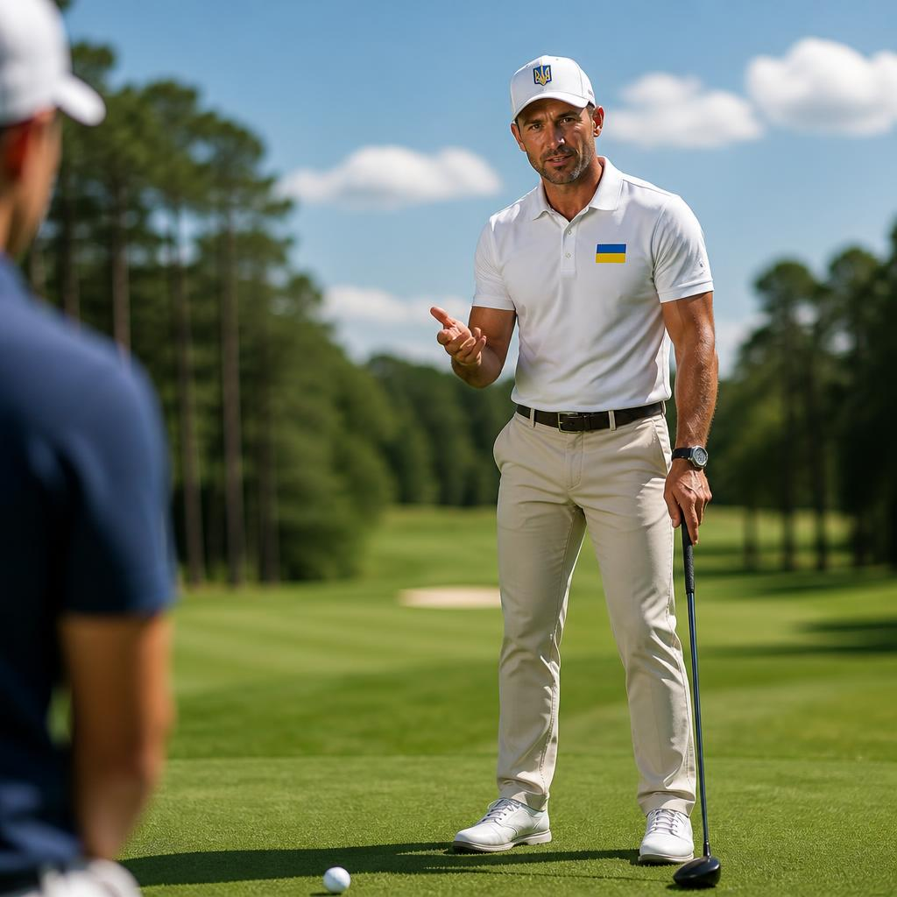
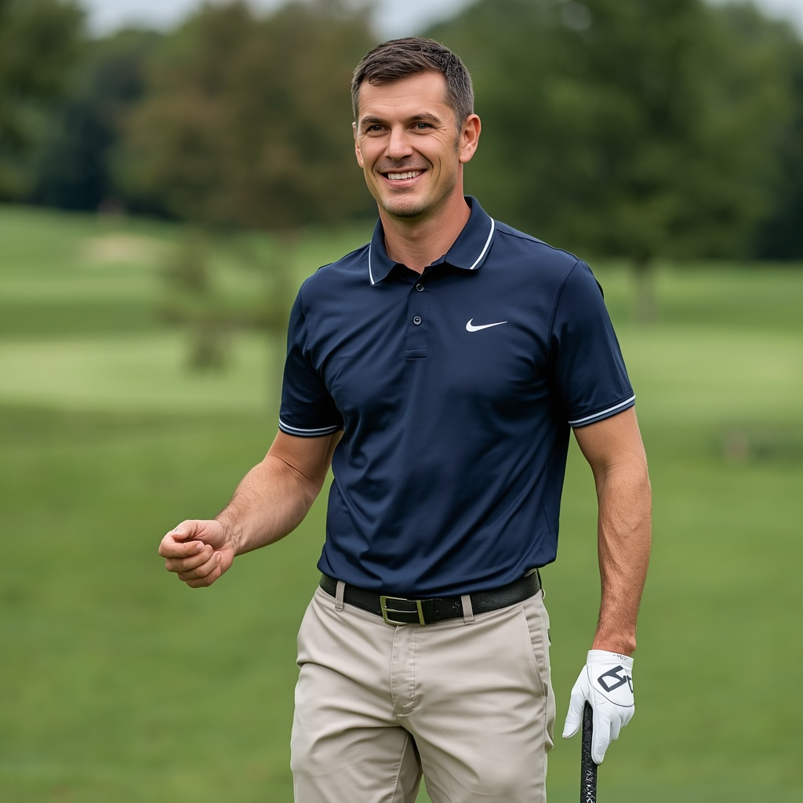
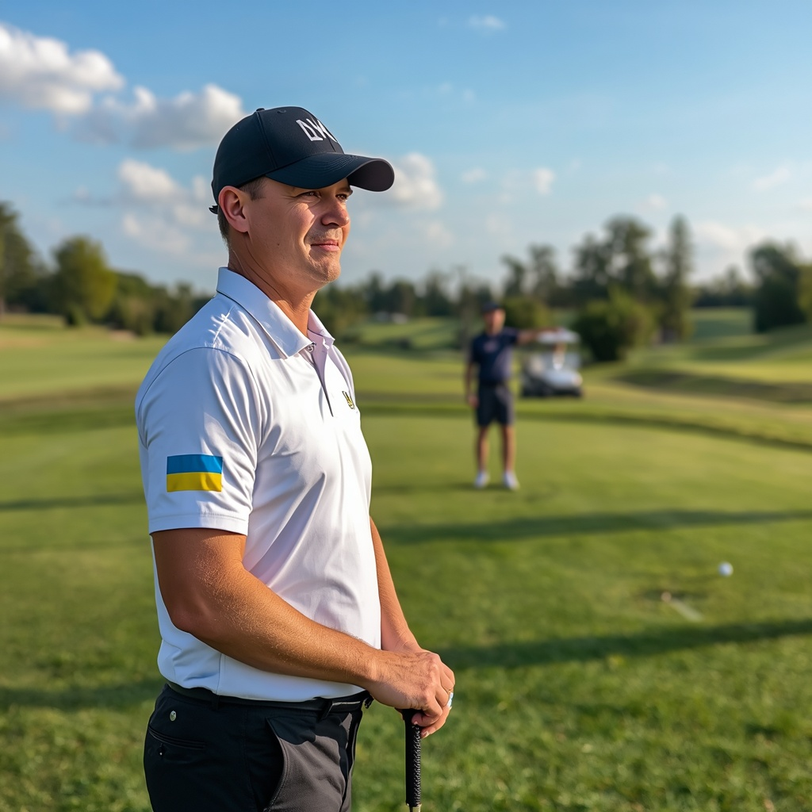

Гольф — це гра на свіжому повітрі, де гравці змагаються у влучності, заганяючи м'яч у лунки за допомогою спеціальних ключок. Гра виникла у Шотландії в XV столітті. Стандартне поле складається з 18 лунок, кожна з яких має свій ландшафт, перешкоди та довжину. Головна мета — пройти дистанцію з мінімальною кількістю ударів. Найпрестижніші турніри (мейджори): The Masters, US Open, The Open Championship та PGA Championship. Гольф вимагає надзвичайної концентрації, психологічної стійкості, точного розрахунку та витривалості. Це не лише спорт, а й стиль життя, що вчить терпінню та стратегічному мисленню.


Основне правило гольфу: грай м'яч з того місця, де він лежить, і грай поле так, як воно є. Гравець починає з "ті-майданчика", роблячи перший удар у бік лунки. Після цього удари виконуються з місця, де зупинився м'яч. Існують різні типи ключок (вуди, айрони, паттери) для різних дистанцій. Якщо м'яч потрапляє у перешкоду (пісок, воду, високу траву), гравцеві нараховуються штрафні удари. Перемагає той, хто пройшов усі 18 лунок з найменшою сумою ударів. Етикет гольфу є надзвичайно важливим: тиша під час удару, дотримання темпу гри та дбайливе ставлення до газону (гріна).
Професіонали, які допоможуть вам досягти ідеального результату

Антон Захаров — Гольф. Досвід: 11 років. Спеціалізація: ідеальний свінг (основний удар), стійка, правильний хват ключки. Досягнення: сертифікований тренер PGA, переможець національного кубка. Про себе: «Поставлю класичну техніку удару з нуля, допоможу стабілізувати рух рук та корпусу для максимальної дальності».

Владислав Руденко — Гольф. Досвід: 15 років. Спеціалізація: паттинг (короткі удари на гріні), читання рельєфу поля, психологічна стійкість. Досягнення: виховав чемпіона країни серед юніорів, засновник гольф-академії. Про себе: «Навчу безпомилково закочувати м'яч у лунку з будь-якої відстані та повністю контролювати емоції».

Олег Воронін — Гольф. Досвід: 8 років. Спеціалізація: удари на середні дистанції, вихід із піщаних бункерів (чип-удари). Досягнення: майстер спорту, призер міжнародних аматорських турнірів. Про себе: «Навчу легко долати будь-які пастки на полі та впевнено грати ключками типу айрон та ведж».

Артур Леонтьєв — Гольф. Досвід: 6 років. Спеціалізація: початкова підготовка, підбір правильного екіпірування, етикет гри. Досягнення: дипломований спортивний інструктор, кращий тренер-консультант року. Про себе: «Введу вас у світ великого гольфу, розберу правила та зроблю так, щоб кожен удар приносив задоволення».

Максим Соколов — Гольф. Досвід: 9 років. Спеціалізація: корекція помилок у техніці, біомеханіка тіла під час удару, розтяжка. Досягнення: сертифікат міжнародної федерації, викладач спортивної біомеханіки. Про себе: «Знайду мікропомилки у вашому русі за допомогою відеоаналізу та доведу свінг до ідеалу».

Євген Самойлов — Гольф. Досвід: 5 років. Спеціалізація: фізична підготовка гольфістів, зміцнення м'язів спини та кора, витривалість. Досягнення: майстер спорту з атлетики, фітнес-експерт гольф-клубів. Про себе: «Зроблю ваше тіло сильним та гнучким для потужних ударів, захищу хребет від травм».